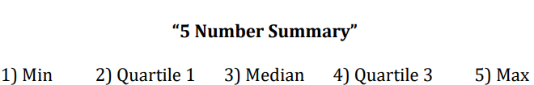

Students will be able to create and interpret displays of data given a set of data values (dot plot, box plot, and histogram).
1) Read
Directions: Read and take notes on the following information.
Before we can create the three displays of data, or graphs, which are a Dot Plot, Box Plot, and a Histogram, we have to understand the "5 Number Summary"
- Displays of Data (Graphs)
- Dot Plot:
- Each dot (or other shape) represents one response
- Do not skip numbers when making a scale & label your axis
- Box Plot (a.k.a. Box & Whiskers Plot):
- Find the 5 Number Summary. Use these to make the box plot
- Choose a suitable scale & label your axis
- Histogram:
- Use a range of values on the x-axis (called “bins”). Each bin is the same width and there are no gaps between bins
- Displays quantitative data (numerical) and shows the frequency of how many data values are within that given range
2) Watch
Directions: Watch and take notes on the following video. If the video is too small to view, you can click the full screen layout.
1. Creating Dot Plot
2. Creating Box Plots
3. Creating Histograms
3) Practice
Directions: Complete the following exercises.
- 1. Dot Plot
- Create Graph
- Ex #1: Interpret Graph
- Ex #2: Interpret Graph
- 2. Box Plot
- Create Graph
- Ex #1: Interpret Graph
- Ex #2: Interpret Graph
- 3. Histogram
- Create Graph
- Ex #1: Interpret Graph
- Ex #2: Interpret Graph